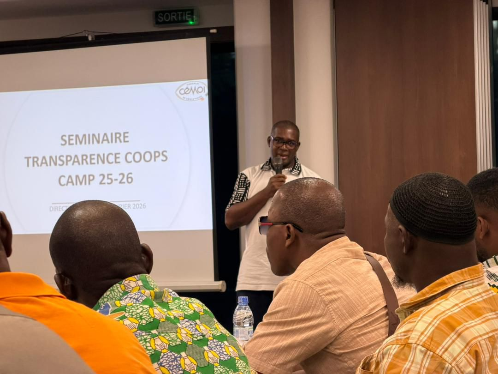
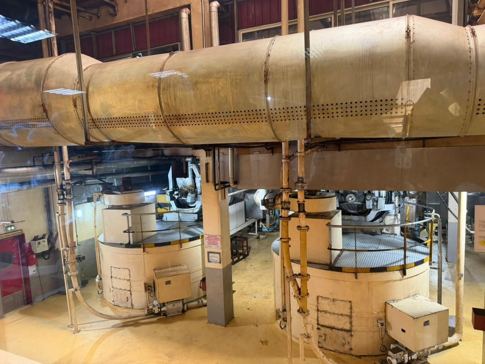
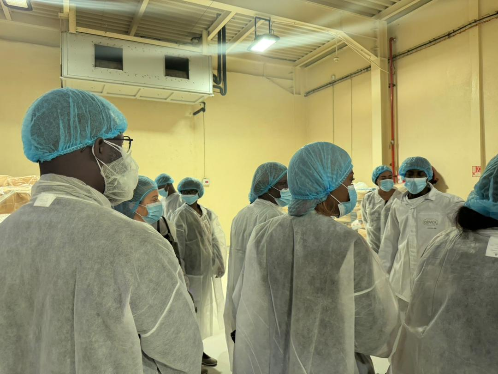

ECAKOOG à la célébration des 10 ans de la chocolaterie CEMOI Côte d'Ivoire
Les 5 et 6 février 2026, la Chocolaterie Cemoi a célébré ses 10 ans. Un moment fort qui a réuni 41 coopératives et des acteurs de la chaîne de valeur cacao.
ECAKOOG, par la présence de Ginette Kouamé, Directrice, et Ousmane TRAORE, Président du Conseil d'Administration, a eu l'honneur d'y participer en qualité de coopérative partenaire de CEMOI et bénéficiaire du programme Transparence cacao.
Cette célébration a permis de retracer le parcours de la chocolaterie, de mettre en lumière le chemin parcouru.
Le programme a été ponctué d'une cérémonie officielle, d'une visite guidée du site industriel et de la chocolaterie, offrant une immersion au cœur du savoir-faire CEMOI.
À l'occasion de cet anniversaire, un séminaire Transparence Cacao a également été organisé le 5 février, avec des aperçus du programme Transparence Cacao, des échanges sur la traçabilité et les évolutions du marché du cacao.
Au-delà des discussions, ces rencontres ont surtout été humaines, riches et inspirantes.
Un grand merci pour cette invitation et ces moments de partage, et joyeux anniversaire à la chocolaterie CEMOI Côte d'Ivoire !


